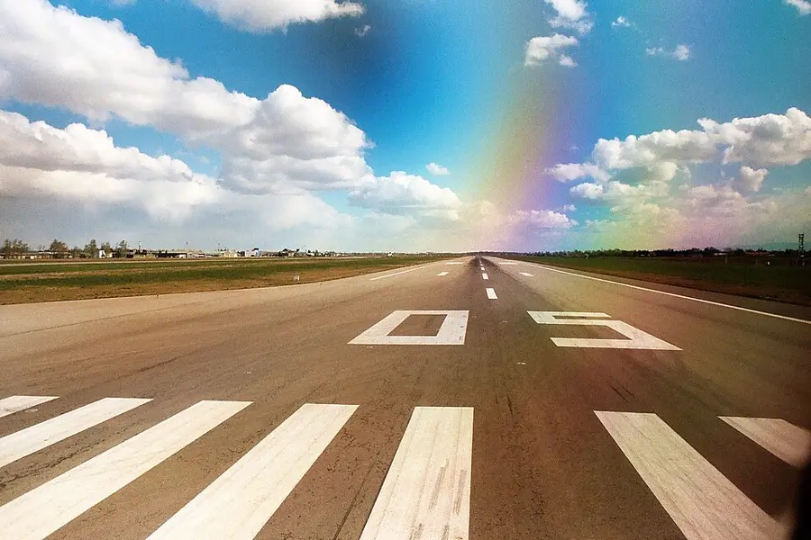

대표 로고대표 브랜드 마크
대표 로고대표 브랜드 마크브뤼셀 항공 Brussels Airlines
브뤼셀 항공(Brussels Airlines)은 2001년 도산한 벨기에의 플래그 캐리어 사베나 벨기에 항공을 대신하기 위해 2006년에 생긴 벨기에의 항공사이다.
최종 업데이트
브뤼셀 항공은 어떤 브랜드인가
브뤼셀 항공은 벨기에 플람스브라반트주 자벤템에 본사를 둔 항공사로, 20개 유럽 국가 50개 도시와 아프리카 지역으로 운항한다. 기존 사베나 벨기에 항공의 IATA 코드를 그대로 승계받았고, ICAO 코드는 새로 부여받았다.
모기업은 Lufthansa이며, 2009년 12월 Star Alliance에 가입했다. 2009년 3월에는 독일로 운행하는 모든 항공편에 대해 Lufthansa와 코드쉐어 협정을 맺었다.
유럽 운항편에는 b.flex economy+, b.light economy, b.business 세 종류의 등급을 운영한다. 항공기 꼬리 날개에는 점으로 이뤄진 b 도색이 있고, 전체적으로 밝은 파란 도색이다.
브뤼셀 항공은 어떻게 시작되고 성장했나
브뤼셀 항공은 2001년 도산한 사베나 벨기에 항공을 대체하기 위해 SN 브뤼셀 항공과 Virgin Express가 합쳐져 설립되었다. 2005년 4월 12일 SN 브뤼셀 항공의 모기업 SN Airholding이 Virgin Express에 회사를 넘겼고, 2006년 3월 31일 두 회사가 하나로 합쳐졌다.
같은 해 11월 7일 브뤼셀 항공이라는 이름을 선언했으며, 2007년 3월 25일부터 영업을 시작했다. 2007년 1월 파산한 에어 마드리드에서 5대의 Airbus A330-300을 인수했다.
모리셔스에 기반을 둔 팬아프리칸 항공을 통해 콩고 민주 공화국에 기반을 둔 에어 DC를 설립했으며, 브뤼셀 항공은 49%의 지분을 가졌다.
브뤼셀 항공의 브랜드 아이덴티티는 무엇인가
사베나 벨기에 항공의 IATA 코드를 승계한 벨기에의 항공사로, 점으로 이뤄진 b 도색과 밝은 파란 도색, 유럽과 아프리카를 잇는 노선이 특징이다.
브뤼셀 항공의 대표 제품과 서비스는 무엇인가
유럽 운항편에는 b.flex economy+, b.light economy, b.business 세 종류의 등급을 운영한다. b.flex economy+는 기내식과 무료 신문이 제공되는 이코노미 등급이다.
b.light economy는 가장 싼 등급으로, 모든 기내 서비스가 유료로 제공된다. b.business는 높은 수화물 중량 제한, 라운지, VIP 주차, 고급 기내식 등을 제공하는 비즈니스 등급으로, 2009년 3월 28일부터 유럽 노선에 도입되었다.
아프리카, 모스크바, 헬싱키, 텔아비브 등 중장거리 노선에서는 이전부터 제공되었다.
브뤼셀 항공은 지금 어떤 상태인가
본사는 벨기에 플람스브라반트주 자벤템에 있고, 모기업은 Lufthansa이다. 2008년 9월 15일 Lufthansa가 지분 45%를 인수하기로 계약했고, 나머지 55%는 2011년까지 추가로 인수할 수도 있었다.
2009년 6월 15일 유럽 위원회에서 Lufthansa의 인수 허가가 났다. 2024년 1월 기준 보유 기종의 평균 기령은 13.5년이다.
브뤼셀 항공 로고는 어떻게 변해왔나
대표 로고대표 브랜드 마크사진으로 보는 브뤼셀 항공의 역사

자주 묻는 질문
브뤼셀 항공는 어느 나라 브랜드인가요?
브뤼셀 항공는 벨기에의 모빌리티 브랜드입니다.
브뤼셀 항공는 언제 설립되었나요?
브뤼셀 항공는 2006년 설립되었습니다.
브뤼셀 항공의 브랜드 아이덴티티는 무엇인가요?
사베나 벨기에 항공의 IATA 코드를 승계한 벨기에의 항공사로, 점으로 이뤄진 b 도색과 밝은 파란 도색, 유럽과 아프리카를 잇는 노선이 특징이다.
브뤼셀 항공의 대표 제품은 무엇인가요?
유럽 운항편에는 b.flex economy+, b.light economy, b.business 세 종류의 등급을 운영한다.
브뤼셀 항공의 본사는 어디에 있나요?
본사는 벨기에 플람스브라반트주 자벤템에 있고, 모기업은 Lufthansa이다.
브뤼셀 항공의 모기업은 어디인가요?
브뤼셀 항공의 모기업은 Lufthansa입니다(위키데이터 기준).
브뤼셀 항공의 공식 웹사이트는 어디인가요?
브뤼셀 항공의 공식 웹사이트는 https://www.brusselsairlines.com 입니다.
출처와 검증
브뤼셀 항공 관련 참고: 공식 웹사이트 · 위키데이터 Q153571 · 한국어 위키백과 · 영어 위키백과. 브랜드명은 한글과 원어를 함께 표기하되 데이터에 없는 표기는 만들지 않습니다. 기원 국가·설립연도는 검수된 정의문에서 확인된 값을 우선하고, 없을 때만 공식 웹사이트 URL이 일치하는 위키데이터 개체의 값을 씁니다. 탄생일의 월·일은 위키데이터, 위키백과 정보상자, 본문 가운데 같은 연월로 확인되는 값만 싣고, 출처끼리 다르면 싣지 않습니다. 위키데이터 값은 2026-11-11 기준입니다.